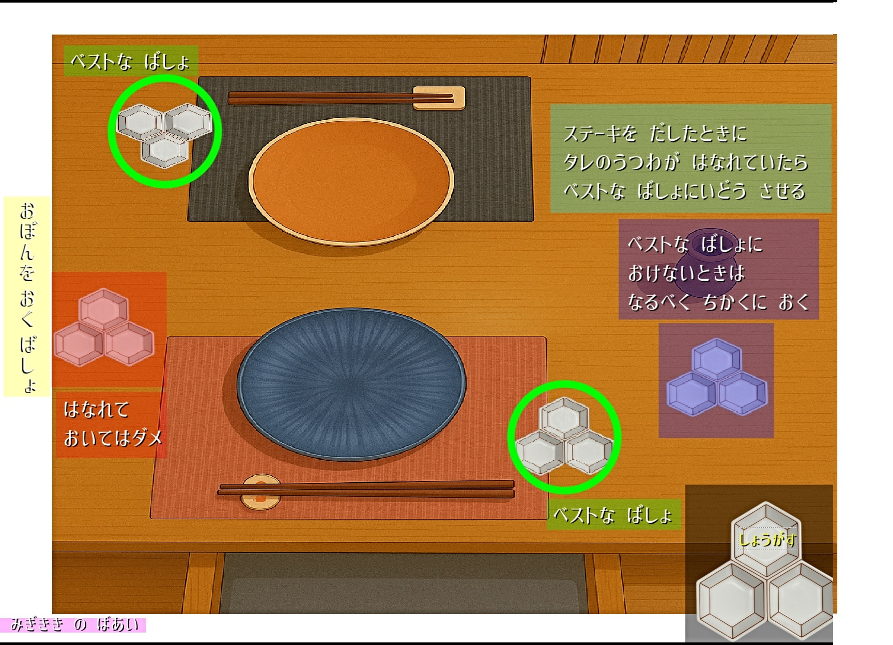

📑 もくじ
1️⃣ せきに あんない（いりぐち～せき）
しょくじばしょ の いりぐちで おきゃくさま を むかえ、あいさつ を します。
「いらっしゃいませ。」
へや の なまえ を かくにんし、ようい した せき に ごあんない します。
「おせき に ごあんない いたします。」
※ のみもの を うかがう スタッフ が いない ばあい：
「ただいま ごあんない させて いただきますので、しょうしょう おまちください。」
2️⃣ せきに ついた あと の ごあんない
「ごせつめい を させて いただきます。」
「こちらは しょくぜんしゅ の ゆずしゅ で ございます。」
※ ノンアルコール の かた には 「ざくろす」 を ごようい しております。
「こちらに ほんじつ の こんだて と、のみもの の メニュー を ごようい しております。」
「あたたかい おちゃ と おみず は、むりょう で ごようい できます。
おきまり に なりましたら、おしらせ ください。」
※ タイミング を みて、のみもの の ちゅうもん を うかがい オーダー します。
むりょう の おちゃ は きほん 「ほうじちゃ」。おみず は こおり の あり／なし を かくにん。
3️⃣ ステーキ タレ の せつめい（ステーキプラン／わぎゅうかいせき）
- ステーキ の まえ の りょうり（あげもの）を ていきょう するとき に、ステーキ の タレ を いっしょ に もって いく。
- りょうり を ていきょう して せつめい した あと に、ステーキ の タレ を ていきょう して せつめい を する。
- 「こちらは ステーキ の タレ に なります。」
- 「いちばん うえ は 『ショウガス』。ショウユ は かさいもり でも ごていきょう した 『もろみしょうゆ』。『モジオ』 と 『クロコショウ』 も ごようい しておりますので、この あと の ステーキ に ごりよう ください。」

4️⃣ ごはん の うかがいかた（ニモノ／ステーキ の あと）
ニモノ の せつめい の あと、つぎ の ように うかがいます。
「このあと、ごはん となりますが、ごようい させて いただいても よろしい でしょうか？」
※ りょうり や おさけ が のこって いる とき は、ききかた を かえる：
「このあと、ごはん となりますが、すこし じかん を あけた ほうが よろしい でしょうか？」
（あいだ を あけて ほしい と いわれたら）
「かしこまりました。 ひつよう な とき に おこえがけ ください。」
※ ボタン の ある へや は 「ボタン を おしてください」 と つたえる。
5️⃣ かんみ ていきょう まえ の かくにん
ほうじちゃ を おもち し、げぜん を しながら ようす を うかがいます。
「このあと、デザート の ごようい と なりますが、おもち しても よろしい でしょうか？」
「また、おやしょく よう に、めしあがって いただいた ごはん を おにぎり に して おもち しております が、ごようい いたします か？」
🥃 ハイボール を たのまれたら（ここ を おして かくにん）